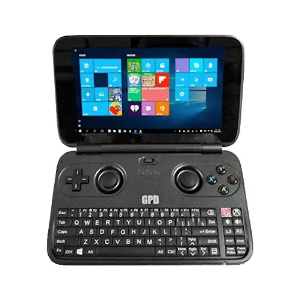

2016 年发布
GPD Win
Windows PC掌机先驱 · 众筹爆款 · 5.5寸翻盖键盘
约20万
系列总销量(估)
1.6GHz
Intel Atom x7
5.5寸
屏幕尺寸
$330
首发价格(美元)
📖 历史与背景
2016年，中国深圳的GPD公司在Indiegogo众筹平台推出GPD Win——这是一款运行完整Windows 10系统的便携掌机。众筹获得超200万美元，远超预期，证明了PC掌机市场的需求。
GPD Win的设计理念是「把PC装进口袋」。它搭载了Intel Atom x7处理器和4GB内存，可以运行完整的Windows桌面软件和PC游戏。5.5寸IPS屏幕分辨率1280×720，配合物理键盘和游戏摇杆，既能当迷你笔记本用，也能当掌机玩游戏。
GPD Win的性能有限——Intel Atom是低功耗处理器，只能流畅运行中低画质的PC游戏和老游戏。但它开创了「Windows PC掌机」这个品类，为后来的AYANEO、Steam Deck等PC掌机铺了路。
⚙️ 硬件规格
CPU
Intel Atom x7-Z8700 四核 1.6GHz
GPU
Intel HD Graphics Gen8
内存
4GB LPDDR3
屏幕
5.5寸 1280×720 IPS
系统
Windows 10 Home
存储
64GB eMMC + microSD
电池
7000mAh（约6-8小时）
重量
约300g
🎮 经典游戏阵容
上古卷轴V：天际
2011 · RPG
掌上运行3A大作
辐射3
2008 · RPG
掌上废土冒险
星露谷物语
2016 · 模拟
掌上种田神作
暗黑破坏神3
2012 · ARPG
掌上刷刷刷
传送门骑士
2017 · 沙盒RPG
掌上沙盒冒险
CS:GO
2012 · FPS
掌上FPS（需调低画质）
我的世界
2011 · 沙盒
掌上无限创造
GTA：圣安地列斯
2004 · 动作
掌上GTA
🏆 市场表现与影响
- 系列总销量：GPD Win + Win 2 + Win 3 + Win 4 合计约20万台（估算），属于小众但忠诚的市场
- GPD Win 2（2018）：升级为Intel Core m3处理器+8GB内存，性能大幅提升
- GPD Win 3（2021）：Intel Core i5-1135G7+16GB内存，接近轻薄笔记本性能
- GPD Win 4（2022）：AMD Ryzen 5 5560U，6寸屏幕，性能接近Steam Deck
- 历史地位：GPD Win是现代PC掌机的先驱——比Steam Deck早了6年，虽然性能有限但验证了市场可行性
💡 趣闻与冷知识
- GPD Win的众筹在Indiegogo上筹集了超过200万美元——远超最初的30万美元目标
- GPD Win的键盘是QWERTY全键盘——虽然键帽极小但可以实际打字，这是Steam Deck等后续PC掌机没有的功能
- GPD Win的Atom处理器发热严重——长时间游戏后机身温度可达50°C以上
- GPD Win的摇杆和方向键可以切换为鼠标模式——在需要精确操作的Windows界面中使用
- GPD是「GamePad Digital」的缩写——这家深圳公司后来还推出了GPD Pocket迷你笔记本系列